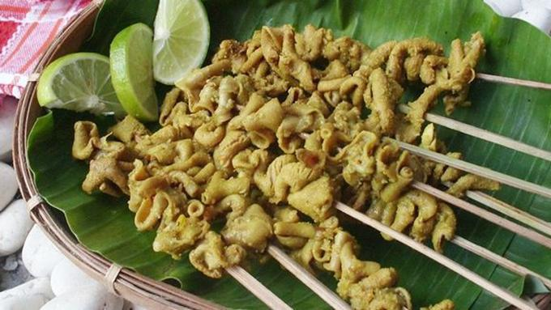
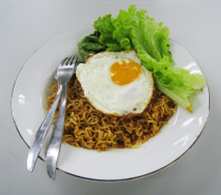

Restoran Ojo Dhumeh
Pesan,Datang dan Nikmati
Menu Makanan
Nasi kucing adalah nasi dengan porsi sedikit sedikit, biasanya ditambah sambal, ikan sejenis ikan teri atau teri keranjang, dan tempe, lalu dibungkus daun pisang.
Harga Sego Kucing: Rp4.000

Natcos atau nacho, makanan khas Meksiko terbuat dari bahan dasar tortilla yang dijadikan kripik dengan rasa yang gurih dan lembutnya keju yang dioleskan di atas kripiknya. Natcos ini enak disantap sambil ngobrol bersama teman
Harga Natcos: Rp 5.000

Sante goreng/rebus, makanan sampingan sate ini terbuat dari usus ayam yang dimasak dengan digoreng atau direbus yang sudah dibumbui. Makanan sampingan ini cocok disantap bersamaan dengan sego kucing atau sego macan.
Harga Sante Goreng/Rebus: Rp5.000
Sego macan makanan variasi dari sego kucing, ukurannya tiga kali lebih besar dibandingkan nasi kucing. Disajikan dengan nasi yang dibakar atau nasi kucing, ikan, dan sayuran. Seperti nasi kucing, sego macan juga dibungkus daun pisang.
Harga Sego Macan: Rp 6.000
Pisang bakar keju, makanan penutup yang enak disantap saat selesai makan. Dengan di tambah topping mesis, susu dan keju diatasnya akan menambah rasa nikmat saat menyantapnya.
Harga Pisang Bakar Keju: Rp7.000
Roti bakar keju, makanan penutup yang enak disantap saat selesai makan. Dengan bahan roti tawar yang dibakar dengan ditaburi parutan keju diatasnya.
Harga Roti Bakar Keju: Rp7.000

Intel goreng, makanan yang terbuat dari indomie goreng ditambah dengan penyajian di akhir dengan telur mata sapi, yang terlihat menggiurkan dan bisa membuat perut kenyang.
Harga Intel Goreng: Rp7.000
French fries ori atau kentang goreng yang digoreng dengan rasa asin dan gurih. Camilan ini cocok disantap bersamaan dengan mie ataupun nasi. Biasanya ditemenin dengan saos yang begitu pedas, akan membuat kentang goreng ini lebih enak
Harga French Fries Ori: Rp8.000

Roti prawan manja, roti ini dibentuk seperti bunga mekar, dengan toping di tengahnya lalu di oven. Agar roti ini terlihat seperti bunga yang mekar, dibawahnya diletakkan sebuah cup untuk menahan bagian bawah roti tersebut.
Harga Roti Prawan Manja: Rp8.000
Inju goreng atau indomie goreng dengan tambahan keju. Masih sama makanan ini menggunakan Indomie goreng yang disajikan dengan keju diatasnya. Untuk para pecinta keju yang ingin menyantapnya dengan mie, bisa membeli hidangan ini tanpa harus membawa keju dari rumah.
Harga Inju Goreng/Rebus: Rp8.000
French fries keju ini sama halnya dengan french fries ori. Hanya ditambah dengan bumbu rasa keju yang menambah sedap rasa untuk pecinta french fries dengan dibaluri rasa keju.
Harga French Fries Keju: Rp9.000
Roti patah hati, roti ini terbuat dari roti tawar yang dilipat dengan mengisikan topping agar terlihat berisi lalu pinggirannya akan ditutup rapat. Untuk anda yang sedang merasakan patah hati dapat menikmati roti ini agar dapat menyembuhkan rasa patah hati yang anda rasakan.
Harga Roti Patah Hati: Rp9.000
Nasi goreng Ori ini nasi dimasak dengan minyak goreng, dan mencampurkan beberapa bahan yaitu bawang, nasi, telur, dan beberapa sayuran yang masih segar. Dengan dibumbui garam, lada, dan bumbu lainnya.
Harga Nasi Goreng Original: Rp9.000
Nasi goreng sosis, nasi goreng ini masih sama dengan nasi goreng pada umumnya. Saat merasa ingin menambahkan sosis di dalamnya tak usah membeli terpisah, cukup memesan hidangan ini. Maka anda akan mendapatkan nasi goreng sesuai dengan keinginan yang ditambah dengan sosis pada hidangan ini.
Harga sNasi Goreng Sosis: Rp10.000
Roti Cinta kita, hidangan pembuka sebelum makan atau main course, berbahan roti yang dilubangi dan digoreng bersamaan dengan telur ditengahnya dan ditaburi wangi nya parsley
Harga Roti Cinta Kita: Rp10.000
Sosis spesial, Makanan sampingan sosis daging sapi yang dibakar dengan bumbu dengan margarin dan bumbu untuk sosis bakar. Anda bisa memesan tingkat kepedasannya sesuai selera masing-masing.
Harga Sosis Spesial: Rp10.000
Intersos goreng atau indomie goreng dengan telur dan sosis. Hidangan ini menyediakan indomie goreng yang penyajiannya akan ditambah dengan sosis yang sudah digoreng dan dibentuk seperti hati dengan telur ditengah nya yang setengah matang akan menambah rasa kenyang anda saat sudah menyantap hidangan ini.
Harga Intersos Goreng: Rp12.000